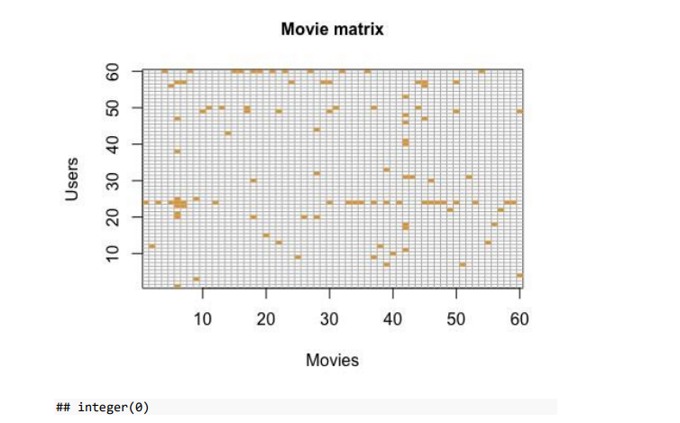

The abundance of entertainment content options, such as movies, in the digital age can
frequently leave users overwhelmed and unsure of what to view next. Recommender
systems play an essential role in addressing this issue by providing personalized
suggestions based on the preferences and behaviors of users. To enhance user experience
and engagement, these systems are extensively implemented on numerous platforms,
including streaming services, e-commerce websites, and social media platforms.
This report describes the design and construction of a MovieLens-based movie
recommender system. The system’s main purpose is to let users enter a movie they like and
get recommendations for others. The system makes user-item interaction-based
predictions using collaborative filtering, a proven recommendation method. Collaborative
filtering is ideal for tailored movie suggestions since it predicts user preferences from a
group of users.
Step 1: Load and Preprocess the Data
The initial phase of recommender system development involved importing and
preprocessing the MovieLens dataset. This dataset contains user-provided movie ratings
and metadata. The movies and ratings data were imported from their respective CSV files.
Afterward, a merged dataset was created by combining movie and rating
# Load required packages
library(tidyverse)
## ── Attaching packages ─────────────────────────────────────── tidyverse
1.3.2 ──
## ✔ ggplot2 3.4.2 ✔ purrr 1.0.1
## ✔ tibble 3.2.1 ✔ dplyr 1.1.2
## ✔ tidyr 1.3.0 ✔ stringr 1.5.0
## ✔ readr 2.1.4 ✔ forcats 1.0.0
## ── Conflicts ──────────────────────────────────────────
tidyverse_conflicts() ──
## ✖ dplyr::filter() masks stats::filter() ##
✖ dplyr::lag() masks stats::lag()
library(caret)
## Loading required package: lattice ##
## Attaching package: 'caret'
##
## The following object is masked from 'package:purrr':
##
## lift
# Load the MovieLens dataset movies <-
read.csv("movies.csv") ratings <-
read.csv("ratings.csv")
#Merge movie and rating data
movielens <- left_join(ratings, movies, by = "movieId") head(movielens)
## userId movieId rating timestamp title
## 1 1 1 4 964982703 Toy Story (1995)
## 2 1 3 4 964981247 Grumpier Old Men (1995)
## 3 1 6 4 964982224 Heat (1995)
## 4 1 47 5 964983815 Seven (a.k.a. Se7en) (1995)
## 5 1 50 5 964982931 Usual Suspects, The (1995)
## 6 1 70 3 964982400 From Dusk Till Dawn (1996)
## genres
## 1 Adventure|Animation|Children|Comedy|Fantasy
## 2 Comedy|Romance
## 3 Action|Crime|Thriller
## 4 Mystery|Thriller
## 5 Crime|Mystery|Thriller
## 6 Action|Comedy|Horror|Thriller
Step 2: Model Evaluation
A small portion (10%) of the dataset is sampled as a validation set, while the remainder of
the data is separated into a working set. The validation set is used to evaluate the efficacy of
the recommender system in the future.
#Model Evaluation
#create the working and validation sets
set.seed(1)
validation_index <- sample(1:nrow(movielens),
0.1*nrow(movielens)) working_set <- movielens[-validation_index,]
temp <- movielens[validation_index,]
tibble(Dataset = c("movielens", "working_set", "temp"),
"Number of ratings" = c(nrow(movielens), nrow(working_set),
nrow(temp)))
## # A tibble: 3 × 2
## Dataset `Number of ratings`
##
## 1 movielens 100836
## 2 working_set 90753
## 3 temp 10083
Step 3: Verify Validation Set Data
Rows in the validation set containing userId and movieId that are absent from the working
set are eliminated. This assures that only data from the working set are included in the
validation set.
#Verify that userId and movieId from the validation set are also present in
working_set
validation <- temp %>%
semi_join(working_set, by = "movieId") %>%
semi_join(working_set, by = "userId")
Step 4: Reintroduce Removed Rows
Reintroducing the rows removed from the validation set to the working set ensures that the
working set is representative of the original data distribution.
#Reintroduce rows removed from the validation set to the working_set set
removed <- anti_join(temp, validation)
## Joining with `by = join_by(userId, movieId, rating, timestamp, title,
genres)`
working_set <- rbind(working_set, removed)
str(working_set)
## 'data.frame': 91150 obs. of 6 variables:
## $ userId : int 1 1 1 1 1 1 1 1 1 1 ...
## $ movieId : int 1 3 6 47 50 70 110 151 157 163 ...
## $ rating : num 4 4 4 5 5 3 4 5 5 5 ...
## $ timestamp: int 964982703 964981247 964982224 964983815 964982931
964982400 964982176 964984041 964984100 964983650 ...
## $ title : chr "Toy Story (1995)" "Grumpier Old Men (1995)" "Heat
(1995)" "Seven (a.k.a. Se7en) (1995)" ...
## $ genres : chr "Adventure|Animation|Children|Comedy|Fantasy"
"Comedy|Romance" "Action|Crime|Thriller" "Mystery|Thriller" ...
Step 5: User Rating Analysis
A summary analysis of the number of ratings per user in the working set is conducted. This
assists in comprehending the distribution of user engagement with the movies.
#Rating per user
working_set %>%
group_by(userId) %>%
summarize(count = n()) %>%
slice_head(n = 10)
## # A tibble: 10 × 2
## userId count
##
## 1 1 202
## 2 2 22
## 3 3 38
## 4 4 198
## 5 5 39
## 6 6 278
## 7 7 141
## 8 8 38
## 9 9 41
## 10 10 125
#summary of user rating
summary(working_set %>% group_by(userId) %>% summarize(count = n()) %>%
select(count))
## count
## Min. : 14.0
## 1st Qu.: 32.0
## Median : 63.5
## Mean : 149.4
## 3rd Qu.: 155.0
## Max. :2435.0
Step 6: Movie Matrix Construction
Each row represents a user, each column represents a movie, and the cell values indicate
whether a user has rated a specific movie (1 if rated, 0 if not rated). The matrix is restricted
to a predetermined number of users and films (limit).
#Movie matrix construction limit
<- 60
user_movie_matrix <- working_set %>%
filter(userId %in% sample(unique(working_set$userId), limit))
%>% select(userId, movieId, rating) %>% mutate(rating = 1) %>%
spread(movieId, rating) %>% select(sample(ncol(.), limit)) %>%
as.matrix() %>%
t(.)
Step 7: Movie Matrix Plot
Creating a plot of the user-movie matrix to visualize the ratings of movies by users. This
plot provides an overview of how users are rating various films.
# Movie Matrix plot user_movie_matrix %>% image(1:limit,
1:limit,., xlab = "Movies", ylab = "Users") + abline(h =
0:limit + 0.5, v = 0:limit + 0.5, col = "grey") + title(main
= list("Movie matrix", cex = 1, font = 2))

Step 8: System Modeling - Training and Testing Sets
For system modeling, the dataset is divided into a training set (90 percent of the data) and a
test set (10 percent of the data). Sampling is used to generate both training and test sets.
#
#System Modelling
#training index
set.seed(1)
train_index <- sample(1:nrow(movielens), 0.9*nrow(movielens)) train_set <-
movielens[train_index,]
temp_test_set <- movielens[-train_index,]
tibble(Dataset = c("movielens", "train_set", "temp_test_set"),
"Number of ratings" = c(nrow(movielens), nrow(train_set),
nrow(temp_test_set)))
## # A tibble: 3 × 2
## Dataset `Number of ratings`
##
## 1 movielens 100836
## 2 train_set 90752
## 3 temp_test_set 10084
# testing index
set.seed(1)
test_index <- sample(1:nrow(movielens),
0.1*nrow(movielens)) train_set <- movielens[-test_index,]
temp_test_set <- movielens[test_index,]
tibble(Dataset = c("movielens", "train_set", "temp_test_set"),
"Number of ratings" = c(nrow(movielens), nrow(train_set),
nrow(temp_test_set)))
## # A tibble: 3 × 2
## Dataset `Number of ratings`
##
## 1 movielens 100836
## 2 train_set 90753
## 3 temp_test_set 10083
Step 9: Verify Test Set Data
Similar to the validation set, rows in the test set with userId and movieId that are not
present in the training set are removed to ensure consistency in the data.
# Verify that userId and movieId in the test set are also present in the
training set
test_set <- temp_test_set %>%
semi_join(train_set, by = "movieId") %>%
semi_join(train_set, by = "userId")
# Add rows eliminated from the test set to the training set.
removed <- anti_join(temp_test_set, test_set)
## Joining with `by = join_by(userId, movieId, rating, timestamp, title,
genres)`
train_set <- rbind(train_set, removed)
Step 10: Random Guessing Model
A model of random guessing is established for comparison purposes. The model randomly
estimates a rating for each user based on the distribution of ratings in the training set.
Mean Absolute Error (MAE), Mean Squared Error (MSE), and Root Mean Squared Error
(RMSE) are utilized to evaluate this model’s efficacy.
#Random guessing model and
predictions rating_range <- seq(0.5,
5, 0.5) guess_right <- function(x, y)
{ mean(y == x)
}
set.seed(1)
simulation <- replicate(10000, {
i <- sample(train_set$rating, 1000, replace = TRUE)
sapply(rating_range, guess_right, i)
})
guess_prob <- c()
for(i in 1:nrow(simulation)) {
guess_prob <- append(guess_prob, mean(simulation[i,]))
}
y_hat_random <- sample(rating_range,
size =
nrow(validation),
replace = TRUE, prob =
guess_prob)
evaluation <- tibble(Model = c("Cinematch", "The Netflix Prize", "Random
guessing"),
MAE = c(NA, NA, Metrics::mae(validation$rating,
y_hat_random)),
MSE = c(NA, NA, Metrics::mse(validation$rating,
y_hat_random)),
RMSE = c(0.9525, 0.85725,
Metrics::rmse(validation$rating, y_hat_random)))
print(evaluation)
## # A tibble: 3 × 4
## Model MAE MSE RMSE
##
## 1 Cinematch NA NA 0.952
## 2 The Netflix Prize NA NA 0.857
## 3 Random guessing 1.15 2.16 1.47
Step 11: Linear Regression Mode
Introduced is a linear regression model with a mean baseline. The predicted ratings are
based on the training set’s mean rating.
#Linear Regression Model
mu <- mean(train_set$rating)
y_hat_mean <- rep(mu, nrow(validation))
evaluation <- bind_rows(evaluation, tibble(Model = "Linear model (mean
baseline)",
MAE =
Metrics::mae(validation$rating, y_hat_mean),
MSE =
Metrics::mse(validation$rating, y_hat_mean),
RMSE =
Metrics::rmse(validation$rating, y_hat_mean)))
print(evaluation)
## # A tibble: 4 × 4
## Model MAE MSE RMSE
##
## 1 Cinematch NA NA 0.952
## 2 The Netflix Prize NA NA 0.857
## 3 Random guessing 1.15 2.16 1.47
## 4 Linear model (mean baseline) 0.812 1.04 1.02
Step 12: Movie Bias Calculation
The average rating deviation for each movie relative to the aggregate mean rating is
determined to calculate movie bias.
#Movie bias per movie table bi_movie <- train_set %>%
group_by(movieId) %>% summarize(bi_movie = mean(rating - mu),
bi_movie_isolated = mean(rating)) bi_movie %>% slice_head(n = 10)
## # A tibble: 10 × 3
## movieId bi_movie bi_movie_isolated
##
## 1 1 0.423 3.92
## 2 2 -0.0604 3.44
## 3 3 -0.192 3.31
## 4 4 -1.20 2.3
## 5 5 -0.322 3.18
## 6 6 0.442 3.94
## 7 7 -0.272 3.23
## 8 8 -0.930 2.57
## 9 9 -0.434 3.07
## 10 10 -0.0139 3.49
Step 13: User Bias Calculation
User bias is computed by determining the average rating deviation for each user relative to
the aggregate mean rating and the movie bias.
#Movie bias per user
bi_user <- train_set %>%
left_join(bi_movie, by = 'movieId') %>%
group_by(userId) %>%
summarize(bi_user = mean(rating - mu - bi_movie),
bi_user_isolated = mean(rating)) bi_user %>%
slice_head(n = 10)
## # A tibble: 10 × 3
## userId bi_user bi_user_isolated
##
## 1 1 0.828 4.40
## 2 2 -0.0628 3.93
## 3 3 -1.12 2.49
## 4 4 -0.226 3.54
## 5 5 -0.0345 3.67
## 6 6 0.307 3.51
## 7 7 -0.259 3.23
## 8 8 -0.0826 3.45
## 9 9 -0.00810 3.32
## 10 10 -0.189 3.289
Step 14: Linear Model with User and Movie Bias
A linear model is constructed to predict ratings for the validation set using the mean rating,
movie bias, and user bias. For this model, the performance metrics are calculated.
#Linear model(mean + movie bias + user bias)
y_hat_bi_user <- validation %>%
left_join(bi_movie, by='movieId') %>%
left_join(bi_user, by='userId') %>%
mutate(y_hat = mu + bi_movie + bi_user) %>%
.$y_hat
evaluation <- bind_rows(evaluation,
tibble(Model = "Linear model (mean + movie and user
bias)",
MAE = Metrics::mae(validation$rating,
y_hat_bi_user),
MSE = Metrics::mse(validation$rating,
y_hat_bi_user),
RMSE = Metrics::rmse(validation$rating,
y_hat_bi_user))) print(evaluation)
## # A tibble: 5 × 4
## Model MAE MSE RMSE
##
## 1 Cinematch NA NA 0.952
## 2 The Netflix Prize NA NA 0.857
## 3 Random guessing 1.15 2.16 1.47
## 4 Linear model (mean baseline) 0.812 1.04 1.02 ##
5 Linear model (mean + movie and user bias) 0.664 0.754 0.868
Step 15: Top 10 Movie Recommendations
The top 10 movie recommendations for the test set are derived using a linear model with
user and movie bias. The titles of the selected films are depicted in a data frame based on
their predicted ratings.
#Top 10 Movies Recommendations top10 <-
test_set %>% left_join(bi_movie, by =
"movieId") %>% left_join(bi_user, by =
"userId") %>% mutate(y_hat = mu + bi_movie
+ bi_user) %>% arrange(desc(y_hat)) %>%
select(title) %>% unique() %>%
slice_head(n = 10)
top10_df <- data.frame(Title = top10,
Rating = rep(NA, 10),
Count = rep(NA, 10))
print(top10_df)
## title Rating Count
## 1 Children of the Corn IV: The Gathering (1996) NA NA
## 2 Machete Kills (Machete 2) (2013) NA NA
## 3 Logan (2017) NA NA
## 4 Shawshank Redemption, The (1994) NA NA
## 5 Lion King 1½, The (2004) NA NA
## 6 Trial, The (Procès, Le) (1962) NA NA
## 7 Like Stars on Earth (Taare Zameen Par) (2007) NA NA
## 8 Rough Night (2017) NA NA
## 9 Fight Club (1999) NA NA
## 10 The Man from Nowhere (2010) NA NA
Conclusion
The report illustrates the construction of a recommender system based on a linear model
with user and movie bias. It includes data preprocessing, model training and testing, bias
calculation, and performance evaluation of various models. The recommendations are
derived using the linear model and the predicted ratings.
References
https://www.kaggle.com/code/amirmotefaker/movie-recommendation-system-using-rbest